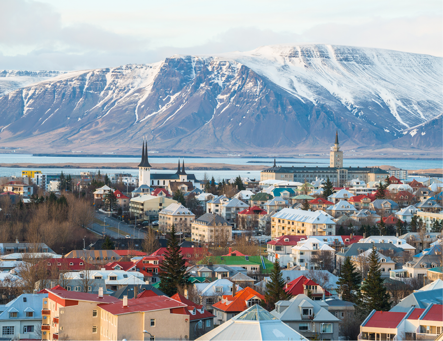

Trajetoria da Verônica
Verônica Ribas
"Escolha algo que te faça feliz hoje"
GOSTARIA DE MORAR NA ISLANDIA

TECNOLOGIAS QUE IREI APRENDER NO RESILIA
- HTML
- JAVA SCRIPT
- CSS
- Banco de Dados
- Inteligência Emocional
SOBRE MIM
- Tenho 21 anos
- Moro em São José dos Pinhais
- Gosto de séries de filmes de terror
- Apaixonada por astronomia
- Curso direito
- Tenho uma gata (Morgana)